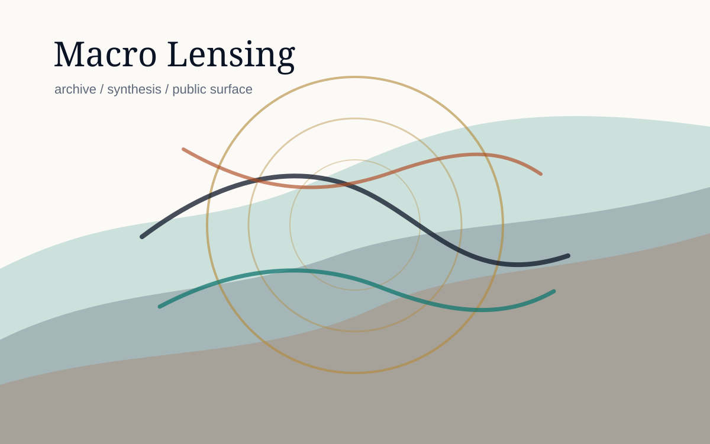
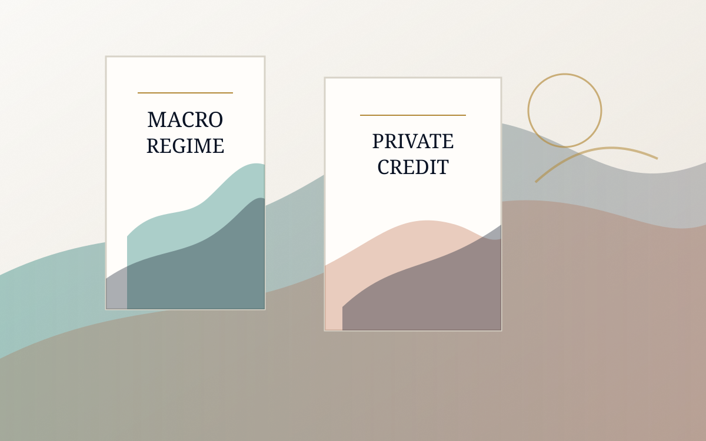

Daily Macro Journal
Macro Lensing
Daily market field notes tracking regime, liquidity, cross-asset pressure, sector transmission, and operating posture.
Public Projects Index
A simple index for Composite Operator publications and research pages.

Daily Macro Journal
Daily market field notes tracking regime, liquidity, cross-asset pressure, sector transmission, and operating posture.

Library
Formal educational publications, manuals, PDFs, and chart-supported research documents.
Discord
The Discord home for Composite Operator discussion, research process, and live project coordination.